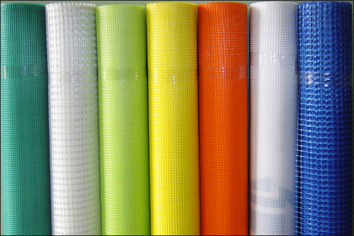
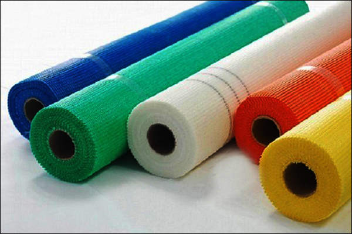
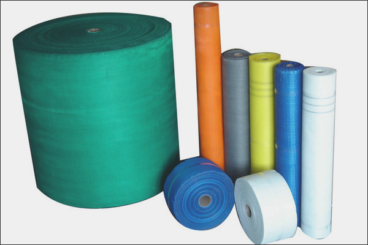

01 / Reinforcement
Fibreglass mesh
Woven fibreglass mesh for building-material applications. Confirm coating, mass, aperture and performance for the intended system.
Enquire about mesh ↗DANYANG, JIANGSU · INDUSTRIAL FIBRE PRODUCTS
Fibreglass mesh, self-adhesive tapes and screening. Explore the materials, review the published capabilities and build a clearer trade enquiry.
A focused introduction to Tianyu’s mesh, tape and screening ranges, with a direct route to the export team.
UK-facing design concept for a China-based manufacturer.

The materials
Select a family to discuss dimensions, finish and supply requirements.

Woven fibreglass mesh for building-material applications. Confirm coating, mass, aperture and performance for the intended system.
Enquire about mesh ↗Fibreglass tape is listed in the existing product range. Specify width, roll length, adhesive and application requirements.
Discuss tape requirements ↗Plain-weave and leno-weave screening appear in the supplier’s catalogue. Confirm mesh, colour, roll width and supporting test data.
Discuss screening ↗Define weave, yarn, coating and intended application with the supplier before selecting a product.
Enquire about netting ↗Mechanical fixings listed in the existing range. Suitability, substrate and dimensions require confirmation.
Discuss fixings ↗Shutter and shading products from the wider catalogue. Request current profiles, finishes and documentation.
Discuss shutter products ↗Product families and photographs sourced from the existing Tianyu catalogue ↗. Typography-only panels are illustrations, not product photos.
Technical reference
Published capabilities provide a starting point—not a substitute for an approved product specification.
Original company profile ↗Historical figures from the existing website. Current output, availability, tolerances and certification have not been independently verified.

About the manufacturer
The existing company profile describes fibre drawing, weaving and processing operations, alongside testing and technical facilities. This concept makes that information easier to navigate without claiming a UK factory, warehouse or certification.
Confirm the exact product, specification, test documents, minimum quantity, packing and delivery terms with Tianyu’s export team.
Trade enquiries
Discuss your application with the export team using the supplier’s published contact details.
tyxw@tyfibre.com ↗+86 511 8688 6388
Contacts copied from the supplier’s public site; confirm they are current. Sending email opens your own mail app.
This independent concept is not operated by Tianyu. The form below does not send or save data. Do not enter personal or confidential details.
The showcase keeps contact direct. The full catalogue adds more product families, technical references, filtering and a structured enquiry preview.